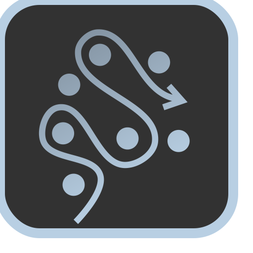
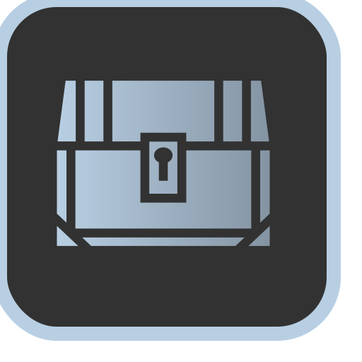

Phaselock
Action Skill. Lock an enemy in another dimension, preventing him from fighting back for a short while. Some enemies cannot be Phaselocked and instead instantly take damage. Cooldown: 13 seconds0
Whirlwind Strike
As an action, you can perform your attack action against all targets within 5 feet.Arcane Arts
You know maneuvers from the Battle Master Fighter archetype. You use ds for these maneuvers and each maneuver costs sorcery points to use.Total Focus
Once per short rest, you can choose to succeed on a concentration check that you would have failed.Quick Cantrip
You can use quicken metamagic on any cantrip without using sorcery points.Spell Weaving
Performing a melee attack grants advantage on your next non-melee spell attack until the end of your next turn. Performing a non-melee spell attack grants advantage on your next melee attack until the end of your next turn.Improved Spellstrike
Whenever you would make a melee attack against a single target, you may instead choose to cast a melee cantrip instead.Extra attack
You can now attack two times per attack action. This does not stack with other sources of extra attack (such as from multiclassing).Spell Combo
Whenever you perform four attack actions consecutively without repeating any attack in this sequence, you can cast a spell as a free action (e.g. whirlwind strike => quickened booming blade => attack of opportunity => attack action => free action spell).Spellburst
When using the Spellsword ability, you can choose to end the spell you are concentrating on to deal maximum damage with that attack.
Omnislash
As an attack action, you can now hit multiple enemies with a single strike. Draw a line up to your movement, passing through each of your intended targets. You can perform a single melee attack against every enemy you pass through, provoking no attacks of opportunity while you pass through them.
0
Phaselock
Action Skill. Lock an enemy in another dimension, preventing him from fighting back for a short while. Some enemies cannot be Phaselocked and instead instantly take damage. Cooldown: 13 seconds0
Arcane Studies
You can choose a spell from the wizard class' spell list th level and under and add it to your list of known spells.Abundant Casting
You can now use flexible casting to create any number of spell slots or sorcery points instead of just one as a bonus action. You can also now create 6th level spell slots by spending sorcery points.Echo Spell (Metamagic)
Costs sorcery points. An echo spell is cast again in the same spot one round later at the start of your next turn. Only instantaneous spells with an area of effect can be echoed. Targeted spells, spells with a duration, and spells requiring concentration cannot be echoed.Spell Efficiency
The cost of creating new spell slots with sorcery points is reduced by . Furthermore, whenever you convert spell slots to sorcery points, you gain extra sorcery point for each spell slot converted.Spell Critical
All of your damaging spells are now capable of critically hitting. Critically hitting with a spell generates sorcery points. per level.Intensify Spell (Metamagic)
You can cast a spell as if you were using a higher level spell slot. Costs a number of sorcery points equal to the higher level spell slot (e.g. intensifying a level 3 fireball to level 9 costs 9 sorcery points).Widen Spell (Metamagic)
Costs sorcery points. Any spell with an area of effect has its diameter/length increased by 50%.Metamagic Master
You can now apply two metamagic options to the same spell, unless otherwise noted.Maximize Spell (Metamagic)
Costs sorcery points. Any rolled values for this spell are maximized (e.g. maximum damage, maximum healing, etc).Twin Cosmic
As a bonus action costing sorcery points per level, you can create a shadowy clone of yourself made out of pure arcane energy. This clone has an action and a bonus action which it can use to cast any spell or cantrip you know on your turn, using up your spell slots and arcane points. Maintaining this clone costs sorcery point per round after the first. This clone moves alongside you, similar to the spell mirror image, lacks physicality, and cannot be destroyed.
0
Phaselock
Action Skill. Lock an enemy in another dimension, preventing him from fighting back for a short while. Some enemies cannot be Phaselocked and instead instantly take damage. Cooldown: 13 seconds0
Adaptive Runes
Choose a damage type. You now have resistance to that damage type. Additionally, whenever you are targeted with this damage type, you charge one rune. You may only charge one rune per turn in this manner. You may change which damage type you resist during a short rest/long rest.Reflective Runes
Whenever a spell attack is directed at you, you have a 1 in 4 chance of reflecting it. If reflected, you may redirect it towards a target of your choice by making a spell attack roll.
Runic Storage
Once per day, you can store a spell inside your runes and activate it at any time as a reaction. You must expend a number of charged runes equal to the spell level you're holding. This spell storage dissipates after a long rest.Runic Resonance
Whenever you cast a spell, you gain a number of charged runes equal to the spell level you cast.Quicksilver Runes
By spending charged runes as a reaction, you gain the Freedom of Movement buff until the end of your next turn.Runic Critical
Increases your critical multiplier by . Your critical strikes also charge a number of essence runes equal to your critical multiplier.Runic Blade
As a bonus action, you can spend charged runes to guarantee your next attack melee attack is a critical hit.Spell Absorption
By spending a number of charged runes equal to a spell that is targeting you, either directly or within its area of effect, you can attempt to counterspell it. If successful, the spell gets absorbed by your runes and can be later cast as if it were a known spell. You can only carry one absorbed spell at a time. This absorbed spell dissipates upon use or long rest.Hardened Runes
Your AC and saving throws increase by .Arcane Avatar
You now have the benefits of the Arcane Exemplar Form passively. By spending charged runes, you shift into an Arcane Avatar for 1 minute, gaining the following bonuses instead:- A flying speed of 60 feet
- +2 to attack and spell DC
- Resistance to all damage
- A healing factor of 1d8 hp per round.
- When you cast a spell of 1st level or higher, you regain hit points equal to twice the spell’s level.
0